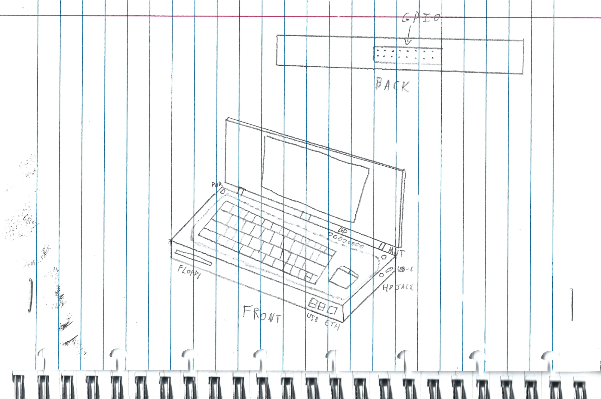
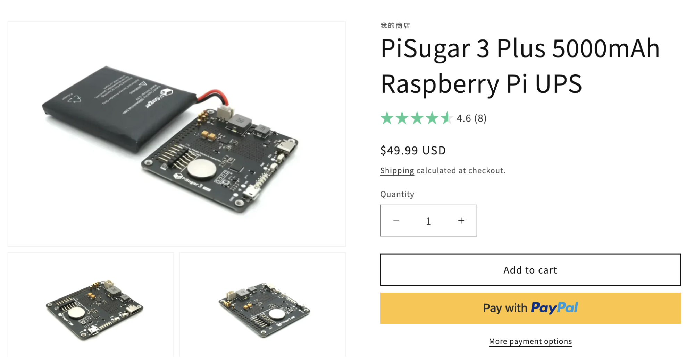
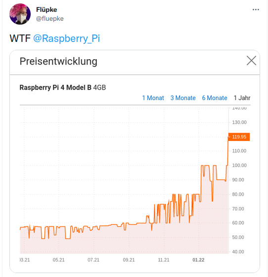
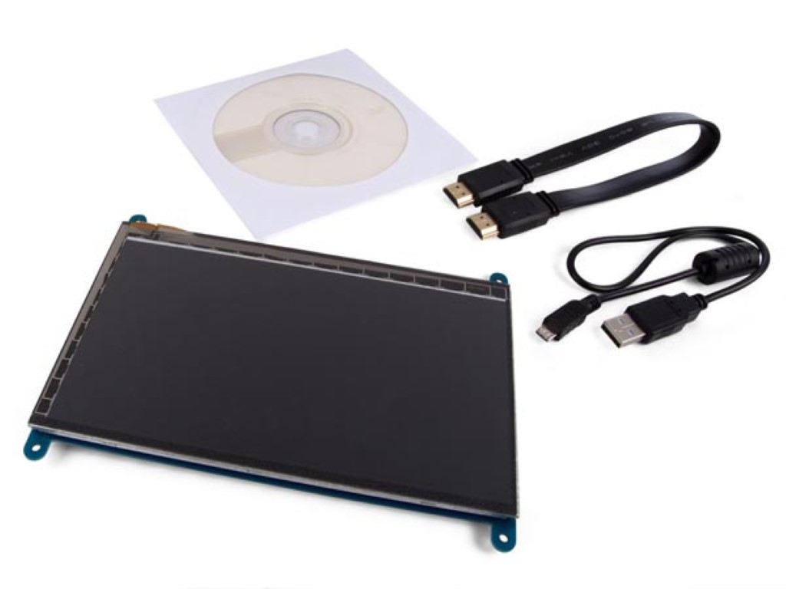
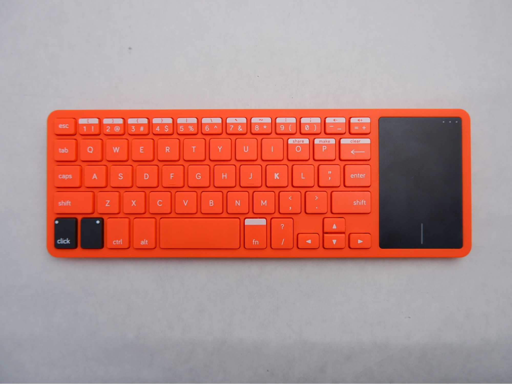
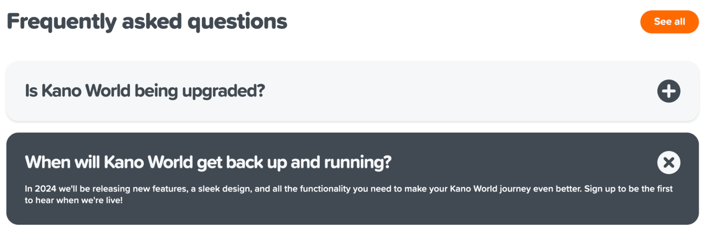
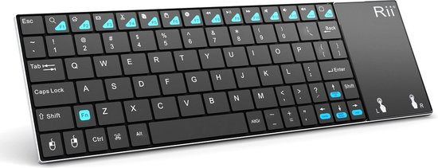
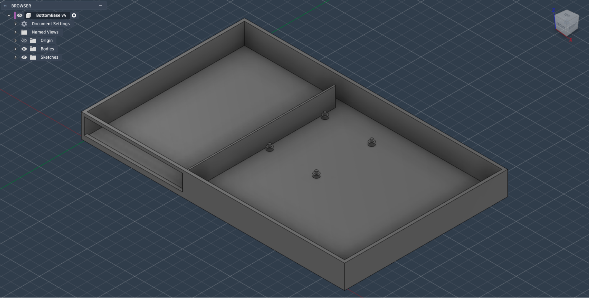

Cyberdecks zijn populair op sociale media, maar hoe worden ze gemaakt? In deze blogpost toon ik hoe ik ben begonnen met mijn eigen cyberdeck te ontwerpen. Misschien zal dit je inspireren om ook je eigen cyberdeck te maken.
In het begin
Ik was door YouTube aan het scrollen, zoals ik vaak doe, en ik zag deze video van Salim Benbouziyane. Hij toonde hoe hij zijn geweldige cyberdeck had gemaakt en van dat punt wist ik dat ik er ook een MOEST maken.
Ik had geluk dat ik nog veel onderdelen had liggen van oude projecten. Dus ik had besloten om die te hergebruiken.
Ontwerp
Ik begon eerst met mijn idee op papier te tekenen. Dit was gewoon een schets van wat ik ongeveer wou maken, maar het idee is ondertussen al wat veranderd.

Mijn cyberdeck is ontworpen om gebruikt te worden voor microcontrollers en hardware te ontwikkelen. Het heeft alle GPIO pinnen van de RPI vrij aan de achterkant voor expansie kaarten en met microcontrollers te communiceren. Ik heb ook een floppy disk drive aan de voorkant geplaatst omdat het past en leuk is.
Het heeft wel geen batterij, maar ik kan gewoon een powerbank in de plaats gebruiken. Zo bespaar ik wat dikte en 60 euro.

Onderdelen
Ik had al een Raspberry Pi 4 8GB en een scherm rond liggen. Wel handig met de RAM en SSD prijzen van nu…

Het scherm dat ik had werkt wel met HDMI. Gelukkig kwam er een dunne HDMI kabel met het scherm. Het enige probleem is dat die HDMI kabel niet flexibel genoeg was om 90° te draaien en te lang was. Ik heb dus online een ribbon HDMI kabel moeten kopen.

Keyboard
Het keyboard is een belangrijk gedeelte van deze cyberdeck. Ik had er een nodig met een ingebouwde trackpad, dat niet te groot was, en genoeg toetsen had om te programmeren. Mijn eerste idee was een toetsenbord van een Kano kit die ik nog had liggen.

Er is wel een klein probleempje… Ik heb de ontvanger niet meer. Mensen online zeggen dat je het met bluetooth kan gebruiken, maar mijn model heeft dat niet. Een andere suggestie die de wijze mensen van Reddit gaven, was om een e-mail te sturen naar Kano voor een vervanging. Ik denk dat je het al voelt aankomen, maar hier was er ook een minuscule probleempje… Kano bestaat niet meer? Of toch niet hoe het vroeger was. In 2023 is Kano gesplitst in Kano Computing en Kano World. Kano World gaat blijkbaar ook in 2024 weer open, dus ik kan niet wachten…

Ik heb dus het beste alternatief gepakt dat ik online kon vinden. De Rii K12+. Het is niet geweldig, maar goed genoeg, zeker voor 27 euro.

CAD Ontwerpen
Ik ben nu bezig met de behuizing te maken in Fusion (360). Het is nog niet af, maar dit is wat ik al heb. Dit is de onderkant.

Bedankt om te lezen. Ik hoop dat de volgende blogpost mijn cyberdeck af zal zijn. Ik hoop ook dat je je nu geïnspireerd voelt om zelf een cyberdeck te maken.